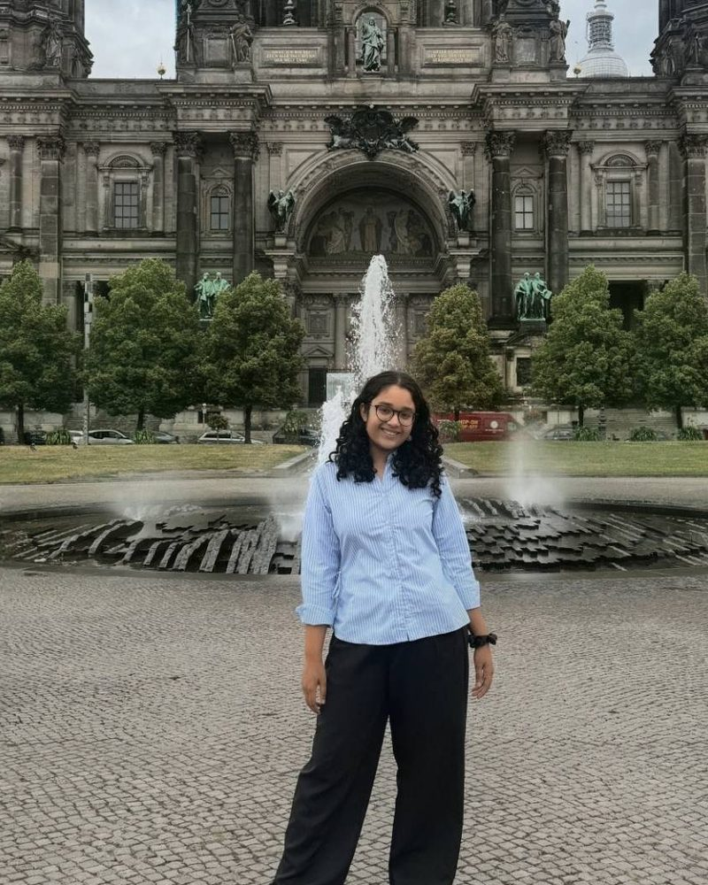

2023 – 2027
Delhi Technological University
B.Tech. in Engineering Physics · CGPA 9.44/10 · Department rank 3 of 120
B.Tech. Engineering Physics · Delhi Technological University
I work on integrated quantum photonics and semiconductor quantum dots, from simulating waveguide bends in JCMwave to wire-bonding wafers in the cleanroom. Most recently at the Integrated Quantum Photonics Lab, Humboldt-Universität zu Berlin.

Research interests
The questions I want to keep working on through graduate research.
On-chip circuits that route, interfere and detect single photons.
Gate-defined structures where charge and spin become qubits.
Selecting and controlling single emitters electrically.
Confining and shaping light below the diffraction limit.
From FEM mode solvers to lithography, deposition and lift-off.
Low-loss bends and couplers for quantum communication.
Research experience
Four groups across Germany and India, from theory and simulation to hands-on fabrication.
Humboldt-Universität zu Berlin, Germany
IISER Thiruvananthapuram, India
Nanoscale Research Facility, IIT Delhi
IIIT Delhi, India
Undergraduate research project · DTU – IIT Delhi
Moving electron spins across a silicon chip without losing their quantum state, a key step towards scalable spin-qubit processors.
Publications & talks
Journal submissions, conference presentations and proceedings.
17th International Conference on Fiber Optics & Photonics (PHOTONICS 2026), IIT Hyderabad, 9–13 Dec 2026
Journal of Physics: Condensed Matter, Oct 2026
XLIX OSI Symposium, Frontiers in Optics and Photonics (FOP 2026), New Delhi, 25–28 Sept 2026
Proc. 2024 IEEE Space, Aerospace and Defence Conference (SPACE), Bangalore, pp. 450–453
Technical skills
Simulation, fabrication and the code that ties them together.
Education & honours
Scholarships, selections and prizes.
B.Tech. in Engineering Physics · CGPA 9.44/10 · Department rank 3 of 120
CBSE Class XII: 93%. Gold Medal for Academic Excellence; Scholar Badge for 7 consecutive years; Blue Blazer awardee.
Leadership & service
Mentoring, outreach and building things with teams.
IEEE
Mentor for Electronics and Embedded Systems at Techweek 2025; gave a motivational talk to first-year students.
HEIV – Society for Popularization of Science
Science communication and public outreach; recruitment and expansion of the society.
CANSAT DTU Institute Team
Can-sized satellite challenge run by the American Astronautical Society and ISRO; worked on descent, stabilisation and navigation.
Feeding Hope
Fundraising for ration distribution during COVID-19.
Third year of Hindustani classical music training; Rabindra Sangeet and harmonium. On court for lawn tennis, and in the pool for swimming.
Contact
I'd be glad to hear about research groups, collaborations or opportunities.